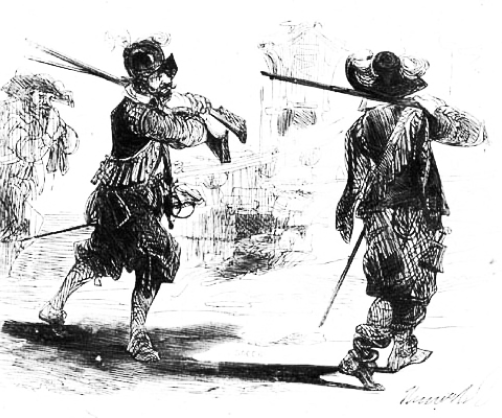
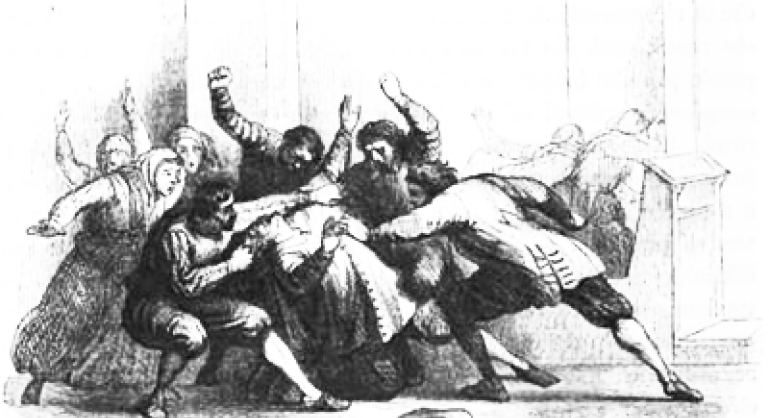
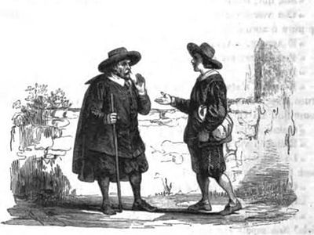
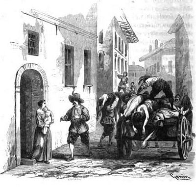
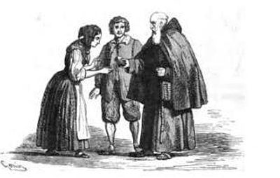
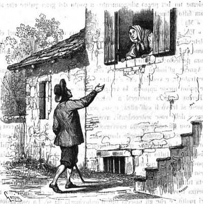
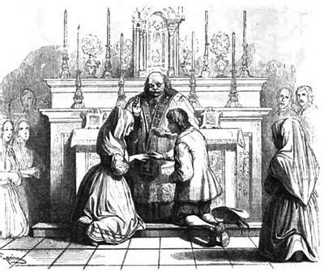

~ La Storia ~

~ L' epidemia ~
I lanzichenecchi diffondono la peste a Milano: l'ignoranza generale e i tanti errori commessi peggiorano ancora di più la situazione, e l'espansione diventa presto incrollabile. Alla maggior parte della gente la peste era infatti sconosciuta, e pochi ricordavano l'epidemia di San Carlo, accaduta solo qualche decennio prima. Il tribunale della sanità inizia ad indagare dei casi sospetti nella provincia milanese, e dopo la seconda commissione, il 30 Ottobre, viene dichiarato l'isolamento della città di Milano.Ambrogio Spinola, nuovo governatore, ordina invece delle feste pubbliche per la nascita del figlio del re Filippo VI: tutte le morti di peste venivano attribuite da ormai tutti a cause di ogni tipo (molte anche fantastiche e inverosimili), senza neanche nominare la peste. L'isolamento vero e proprio della città viene confermato con una grida il 29 Novembre: la peste si diffonde così rapidamente, che le leggi non sono efficaci a evitare la formazione di numerosi focolai in ogni parte di Milano.
Quando il tribunale della sanità accerta la presenza della peste, si inizia a bruciare oggeti, portare intere famiglie nei lazzaretti, e a sequestrare case. Scoppiano così aggressioni da parte dei cittadini contro i medici, accusati di speculazione sul pubblico spavento, e contro le autorità stesse. Nonostante ciò, la peste viene ancora presa in considerazione come una febbre pestilenziale, e null'altro, sebbene non sia più possibile nascondere i morti. Diventa difficile gestire i lazzaretti, sopraffollati e mal tenuti, ma il popolo continuava a non credere alla peste, considerando le morti causate da malefici o opere del Diavolo.
Il panico comune scoppia però quando compaiono strange macchie giallognole in diverse parti della città, e inizia così la ricerca dei cosiddetti "untori", presunti colpevoli della diffusione della peste.

~ Gli untori ~
Viene chiesto in seguito l'intervento di Spinola, il quale, continuamente occupato dalla guerra del Monferrato, lascia il compito al cancelliere Ferrer. Nello stesso periodo, la gente chiede al cardinale Federigo Borromeo di fare una processione per la salma di San Carlo: la richiesta viene rifiutata dallo stesso cardinale, poiché un'assembramento tale avrebbe solo peggiorato la situazione. Solo dopo incessanti e interminabili richieste da parte del popolo, Federigo deve acconsentire alla processione, e nonostante le precauzioni ordinate dal tribunale della sanità, le morti crescono sempre di più.Il popolo continua a puntare il dito contro dei sospetti untori, i quali ormai sono creduti coloro che, con veleni e altri malefici, hanno portato a tutto questo. Nel caso della processione, per esempio, gli untori avrebbero sparso delle polveri velenose che avrebbero infettato i piedi scalsi dei presenti, e così causato tutte quelle morti. I poveri sospettati, il più delle volte, venivano aggrediti e a volte linciati. Nel frattempo, la popolazione milanese si riduce di due terzi.
Nella confusione e povertà generale, i monatti, incaricati di portare i cadaveri su dei carri per seppellirli, si dedicano al saccheggio e all'estorsione (come succederà poi nel caso di Don Rodrigo, nel capitolo XXXIII). La gente vede a questo punto la mano del Diavolo dietro le macchinazioni dei fantomatici untori, e si iniza a dubitare dei propri amici e parenti, tanto che gli stessi medici cedono alla stessa ignoranza che dall'inizio avevano tentato di combattere
Ora, i pochi che erano rimasti "sani" sia dalla peste e dalle storie deliranti che si diffondevano non però si espongono al pubblico, per paura di essere accusati o perfino uccisi. Tutti, infatti, magistrati inclusi, sono impegnati in un'interminabile ricerca degli untori, ora divenuto un vero incubo per tutti. E' qui che cominciano a farsi numerosissimi processi e condanne a poveri innocenti, incolpati ingiustamente di aver propagato la peste.

~ Don Rodrigo e Renzo ~
Una notte di fine d'agosto Don Rodrigo, tornato a casa, inizia a sentirsi male, rifiutando l'idea che il suo malessere possa essere causato dalla peste. Il Griso, rimasto vicino a lui, è attento a non avvicinarsi troppo al signorotto, per evitare possibili contagi.Lasciato da solo, Don Rodrigo si mette a letto, e sogna di trovarsi in una chiesa con molti appestati. Comincia inoltre a sentire un forte dolore al fianco sinistro, e dopo poco vede padre Cristoforo che lo indica. Cerca di afferrarlo, ma non riesce, e di colpo si sveglia. Il dolore al fianco continua incessantemente, e Don Rodrigo scopre di avere sul corpo un bubbone (tipico degli appestati).
Viene chiamato al soccorso il Griso, incaricato di avvertire un medico, ma quest'ultimo non arriverà: al contrario, il Griso tornerà con due monatti per prenderlo e portarlo via. Don Rodrigo viene così immobilizzato, e davanti ai suoi stessi occhi il Griso e i monatti lo derubano. Sfortunatamente, il Griso si ricorda di aver toccato per errore gli abiti di Don Rodrigo, e teme di aver preso la peste: morirà infatti dopo poco, mentre Don Rodrigo è ancora in vita nel lazzaretto.
Si lasciano le vicende di Don Rodrigo per riprendere quelle di Renzo, il quale, sotto un falso nome, era riuscito
a scappare da chi lo accusava di essere un untore, e torna a lavorare per Bortolo. Arrivata la peste anche a
Bergamo, il giovane si ammala, ma fortunatamente sopravvive e decide di tornare da Lucia, ora che era immune.
Giunge al suo villaggio, e lì incontra Tonio, il quale è stato colto dalla peste. Sempre Renzo trova nel suo
viaggio anche un Don Abbondio dimagrito e debole, il quale esorta il giovane a tornare a Bergamo. Lasciato il
curato, trova un suo amico, il quale lo ospita per la notte. Il giorno dopo, ricomincia il viaggio di Renzo, ora
verso Milano.

~ Milano ~
Renzo arriva a Milano, dopo aver corrotto delle guardie per poter entrare. Trova un viandante, a cui chiede informazioni, ma viene subito scacciato. In seguito, una donna, chiusa in casa perché sospetta di essere contagiata, lo chiama, e Renzo le dona due pani, per aiutarla. Dopo aver visto una macchina della tortura, il giovane si spaventa alla vista di un carro di cadaveri portato da dei monatti, temendo che Lucia possa trovarsi da quei morti.Renzo trova un prete, dal quale ottiene informazioni circa la casa di don Ferrante. Viene inoltre comunicata la situazione della donna rinchiusa al sacerdote, il quale si incarica di avvertire le autorità. Le strade sono piene di cadaveri e resti di appestati, e si sentono in tintinnii dei campanelli dei carri dei monatti, insieme alle urla dei malati.
Ad un certo punto Renzo scorge una donna con in grembo una bambina, Cecilia, morta, ma vestita in modo sgargiante. Il monatto incaricare di portare via Cecilia viene pagato dalla donna affinché il cadavere della bambina non venga spogliato. Ritiratasi a casa, la donna aspetta tristemente la morte con un'altra figlia malata in braccio.
Renzo arriva alla casa di don Ferrante, solo per sapere che Lucia si trovava anche lei al lazzaretto, al punto che Renzo si sofferma davanti alla casa del signore. La gente, vedendolo fermo lì davanti, lo accusato di essere un untore, e Renzo riesce a fuggire salendo su un carro di cadaveri. Arrivato finalmente al lazzaretto, tra gli ammalati e appestati deliranti, un uomo ruba di colpo un cavallo dei monatti, vi monta in groppa, e parte al galoppo.

~ La fine di Don Rodrigo ~
Entrato nella sezione maschile del lazzaretto, Renzo rimane sopraffatto da tutti i cadaveri e gli appestati che vi erano. Subito dopo raggiunge uno steccato, al di là del quale vi era il reparto infantile, dove alcune balie allattavano piccoli orfani. Entrato nella sezione maschile del lazzaretto, Renzo rimane sopraffatto da tutti i cadaveri e gli appestati che vi erano. Subito dopo raggiunge uno steccato, al di là del quale vi era il reparto infantile, dove alcune balie allattavano piccoli orfani.Padre Cristoforo esorta Renzo a rassegnarsi nel caso la povera Lucia fosse morta, ma il giovane non ci pensa proprio. Dopo aver sentito alcune minacce contro Don Rodrigo da parte di Renzo, il padre Cristoforo lo apostrofa come scellerato, e, dopo avergli ricordato che solo Dio può punire e giudicare, lo invita a pensare sul perdono cristiano dei propri nemici, e quindi anche di Don Rodrigo.
I due si avvicinano a una capanna, dove al cui interno trovano don Rodrigo in persona, ormai consumato dalla peste. Renzo, sorpreso, e all'inizio confuso, si la associa a fra Cristoforo in una preghiera per la salvezza del signorotto, moribondo e incapace di difendersi. Alla fine di quest'ultimo incontro, Renzo continua il suo viaggio alla ricerca di Lucia, sperando che ella sia ancora viva.

~ Il ritrovamento di Lucia ~
Renzo arriva alla cappella del lazzaretto, dove Padre Felice, predicando ai convalescenti, raccomanda loro l'aiuto reciproco, e invita poi i presenti all'uscita dal lazzaretto. Renzo assiste alla processione in questione, ma tra la piccola folla non vede Lucia, e inizia a perdere le speranze. Alla fine della processione, finalmente Renzo si avvia a entrare nella sezione femminile, e, per giustificare la sua presenza altrimenti scandalosa, si lega una campanella da monatto al piede.Subito, però, egli si caccia nei guai, e corre a nascondersi per togliersi la campanella. Sentendo una voce familiare provenire da una delle due capanne a cui stava vicino, Renzo trova Lucia, guarita, nell'atto di aiutare un'altra donna. Nonostante l'emozione di essersi ritrovato dopo tanti tempo, Lucia si mostra dura nei confronti di Renzo, ricordando il suo voto di castità.
Dopo una breve disputa, la quale era però molto accesa, Renzo di allontana per tornare da frate Cristoforo, e lascia quindi di nuovo la sua cara Lucia.Una volta ritornato alla capanna con il frate, Renzo lascia che padre Cristoforo ricordi a Lucia il tradimento della sua promessa di matrimonio. Così, lui stesso la scioglie dal voto, e la fa tornare ai pensieri del suo tanto atteso matrimonio con Renzo.
Consegnatole come ricordo il pane che lui stesso aveva ricevuto dal fratello del nobile da lui ucciso decenni prima, padre Cristoforo se ne va con Renzo. A questi, prima di lasciare il lazzaretto, parla riguardo alla sua prossima morte e alla sua speranza nella vita eterna

~ Renzo torna a casa ~
Renzo esce dal lazzaretto, e prosegue il suo viaggio fino al mattino del giorno seguente. Lì decide di tornare dall'amico che lo aveva precedentemente ospitato a casa sua. Il giovane offre all'amico di aiutarlo in alcuni lavori, e dopo averci parlato per del tempo, il giorno successivo, ripare per il suo ritorno in paese. Arriva a Pasturo, dove trova Agnese, con la quale conversa e decide, una volta fatto il matrimonio, di trasferire tutta la famiglia a Bergamo.Renzo torna proprio a Bergamo, per rivedere il cugino che aveva fortunatamente scampato la peste. Stato diversi giorni con Bortolo, trova inoltre la casa giusta nella quale abitare una volta sposato con Lucia. Tornato finalmente al paese con Agnese, Renzo aspetta il ritorno della promessa moglie. Nel frattempo, Agnese riprende la sua vita abituale, e Renzo racconta le sue peripezie ai compaesani, evitando però di parlare con don Abbondio (quest'ultimo non era infatti contento del suo ritorno).
Quando Renzo era uscito dal lazzaretto, Lucia trascorre una quarantena nella casa della donna a cui lei aveva badato, la quale era una mercantessa. In quel periodo, Lucia viene a sapere del pentimento di Gertrude e della morte di padre Cristoforo, donna Prassede e don Ferrante, il quale, ammalato e ormai vicino alla morte, continuava a negare l'esistenza della peste, rimanendo fedele ai suoi principi con un controversi discorsi filosofici.

~ Il matrimonio ~
Una sera, Agnese e Renzo finalmente rivedono Lucia, accompagnata dalla mercantessa. Renzo vuole subito fissare una nuova data per il matrimonio, ma i suoi piani sono ostacolati da un don Abbondio ancora timoroso di Don Rodrigo, e volenteroso invece a rimandare a più tardi. Le tre donne, lasciate sole da Renzo, cercano in vano di convincere il curato a cambiare idea. Radicale fu il suo cambiamento di opinione una volta Renzo, con il sacrestano Ambrogio, arriva alla canonica per annunciare l'accertazione della morte del signorotto. Don Abbondio, in seguito, riceve la visita dell'erede di Don Rodrigo, il quale chiede un modo per ripagare i danni causati da Don Rodrigo ai due amanti; la risposta del curato è di acquistare i loro beni ad un equo prezzo, e anche di far cancellare l'ordine di cattura di Renzo.Il marchese, ovvero l'erede del noto signorotto, giunge a casa di Lucia, offre di acquistare ad un prezzo molto alto i loro beni, e perfino invita la compagnia a festeggiare il matrimonio nel suo palazzo. A seguito delle nozze e di un pranzo a cui il marchese non ha però partecipato, un notaio, sostituto di Azzecca-garbugli, stipula l'atto della vendità delle proprietà di Renzo, Lucia e Agnese.
Finalmente, i due sposi salutano i loro cari, e partono per Bergamo, dove pero la coppia inizia a venire criticata, in particolar modo per l'aspetto di Lucia. Insieme a Bortolo, Renzo acquista un filatoio in un altro paese del Bergamasco, e li si trasferisce con Lucia. Ormai giunti alla fine delle loro peripezie, Renzo e Lucia si preparano ad una vita serena, confidandosi nell'aiuto di Dio.